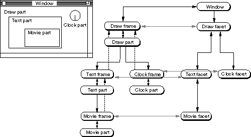

Frame and Facet Hierarchies
The object hierarchy of embedding controls how information is passed among the parts that make up a compound document. Parts and embedded frames make up one hierarchy; facets make up a separate but essentially parallel hierarchy.Figure 3-1 shows a simple example of these hierarchies. The document illustrated in the figure consists of a graphics root part ("draw part"), in which are embedded a clock ("clock part") and a text-processing part ('text part"). The text part has a movie-viewing part ("movie part") embedded within it.
This figure uses the same conventions as the more detailed runtime diagrams presented in the section "Runtime Object Relationships". Individual OpenDoc objects are represented by labeled boxes, with the references (pointers in C++) between them drawn as arrows. (Different arrows have different appearances in Figure 3-1 for clarity only; all represent the same kinds of object references.) The embedding structure extends downward, with more deeply embedded objects shown lower in the diagram.
Figure 3-1 Simplified frame and facet hierarchies in a document

The window object is at the top of Figure 3-1, uniting the two object hierarchies. The window object itself is referenced by the window state object, as shown in Figure 11-5.Frames and Parts
The fundamental structure of embedding in the compound document is repre-
sented by the hierarchy on the left in Figure 3-1. The draw part is the root part of the document; it directly references its two embedded frames. Those frames in turn reference their parts, the text part and the clock part. The text part references its one embedded frame, which in turn references its part, the movie part. Each part thus references its own embedded parts only indirectly. (In this case, there is one display frame per part, but there could be more than one.)Note that each part also has a reference back up the hierarchy to its display frame, and each frame has a direct upward reference up to its containing frame. See Figure 11-6 for a more general picture of the object structure of embedding.
The embedding relationship of parts and frames does not have to be the strict hierarchy shown in Figure 3-1. For example, a single part can have frames embedded at different levels, as in Figure 4-18.
Parts and frames are stored together in their document. When the document is closed, the states of all the parts and frames are saved. When the document is reopened, all the parts and frames are restored by reading in the saved data.
Facets
The hierarchy on the right in Figure 3-1 is analogous to the one on the left, but it is simpler and more direct. The facet hierarchy is designed for fast drawing and event dispatching. Each facet corresponds to its equivalent frame, but it directly references its embedded facets. (In this case, there is one facet per visible frame, but there could be more than one.)Whereas frames must exist (at least in storage, if not always in memory) for all embedded parts in a document, facets are needed for only those frames that are visible at any one moment. Because the facet hierarchy is for drawing and event dispatching, there is no need to have facets that can't be drawn and can't accept events.
Facets are ephemeral; they are not stored when a document is saved. Facets are created and deleted by their frames' containing parts, as the facets' frames become visible or invisible because of scrolling, resizing of frames or windows, or opening and closing of windows.
As Figure 3-1 shows, each frame has a direct reference to (and from) its equivalent facet. That frame-to-facet reference is the connection between the two hierarchies. Each part object therefore references its own facets only indirectly, through its display frames. (Your part can, of course, keep its own private list of its facets.)